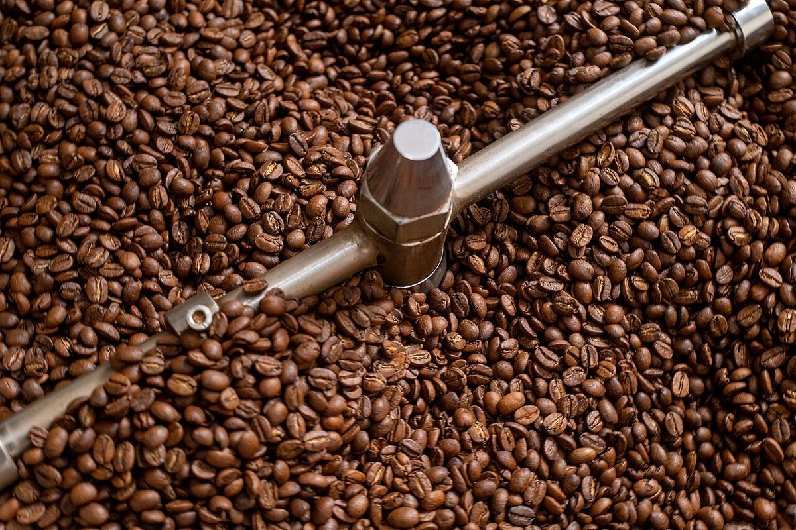
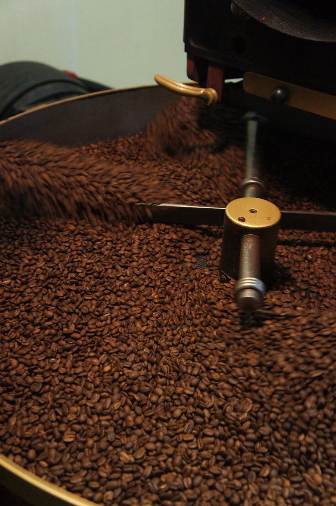
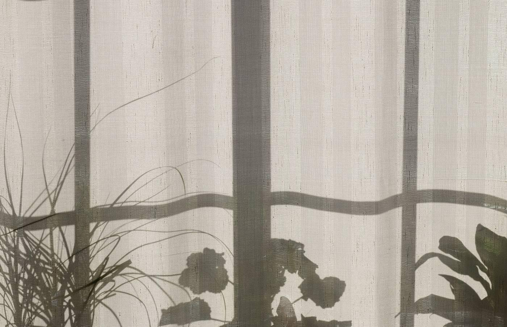
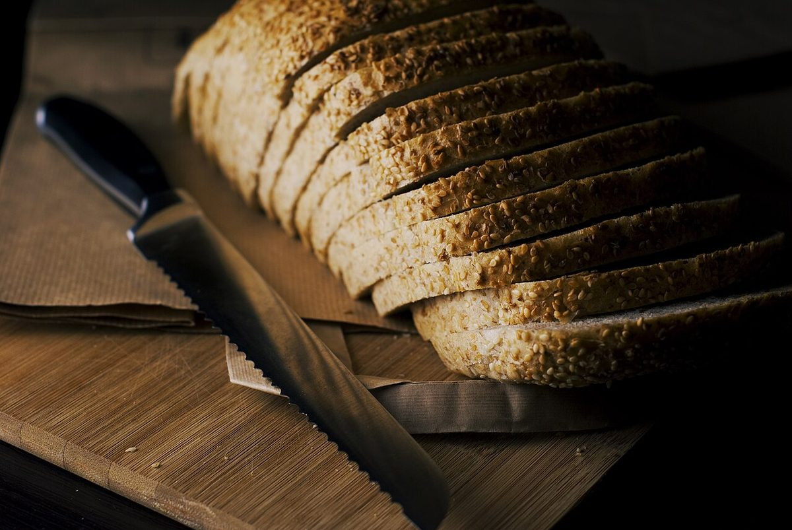

ABOUT
サイフォンとエスプレッソの店
Shirokuma factory coffee は、茨城県神栖市日川にあるコーヒーのお店です。Instagramでは「サイフォンコーヒー&エスプレッソ」と紹介されています。
ガラスの器具でゆっくり抽出するサイフォンと、勢いよく抽出するエスプレッソ。性格の違う二つの淹れ方を並べているのが、このお店の特徴です。
店名の由来やオーナーさんの想いは、確認できていません。このページでは断定を避け、確認できた内容だけをもとに、コーヒーを淹れる「工房(factory)」の雰囲気で構成しました。



MENU
いただけるもの
サイフォンコーヒー
ガラスの器具で淹れるコーヒー。銘柄・価格は準備中
ガラスの器具で淹れるコーヒー。銘柄・価格は準備中
エスプレッソ
エスプレッソ、ラテなどのメニュー。詳細・価格は準備中
エスプレッソ、ラテなどのメニュー。詳細・価格は準備中
パンや軽食・スイーツ
Instagramの投稿には、パンや焼き菓子、お料理の写真も見られます。内容・提供の有無は準備中(要確認)
Instagramの投稿には、パンや焼き菓子、お料理の写真も見られます。内容・提供の有無は準備中(要確認)
営業時間・定休日・価格・ご予約・駐車場: 準備中





写真はすべてフリー素材のイメージです。実際のお店・メニューの写真ではありません。
VOICE
こんな声が届くお店に(イメージ例)
イメージ例
サイフォンで淹れてもらう時間そのものが楽しみ。ゆっくり過ごしたい日に寄りたい一杯です。
イメージ例
エスプレッソの香りがしっかりしていて、仕事帰りに立ち寄りたくなります。
イメージ例
パンと一緒にコーヒーをいただきました。落ち着く雰囲気で、また行きたいです。
上記は制作側が作成したイメージ例で、実在のお客様の声ではありません。